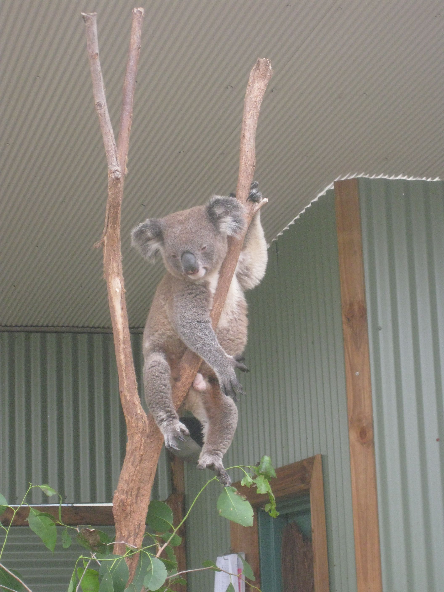

Office Address
Assistant Vice President
Professor
Graduate School of Economics
Hitotsubashi University
2-1 Naka,
Kunitachi, Tokyo
186-8601, Japan
Phone: +81-(0)42-580-8283
Email: tkano at econ dot
hit-u dot ac dot jp
Websites
https://takakano.github.io/
http://ideas.repec.org/e/pka86.html
http://ssrn.com/author=369166
https://www.researchgate.net/profile/Takashi_Kano2
https://www.econ.hit-u.ac.jp/jpn/page/faculty/professor/profile_kano.html

Created: September 1st, 2006
Copyright: Takashi Kano
|